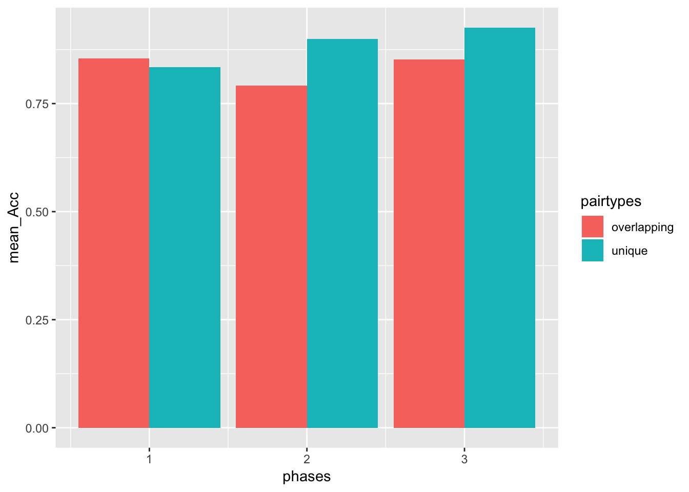
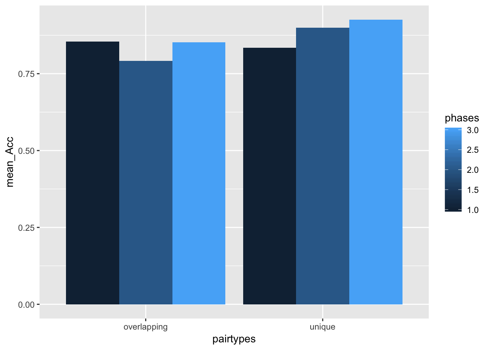

library(data.table)
df <- fread("nodelay datasets.csv")library(dplyr)##
## Attaching package: 'dplyr'## The following objects are masked from 'package:data.table':
##
## between, first, last## The following objects are masked from 'package:stats':
##
## filter, lag## The following objects are masked from 'package:base':
##
## intersect, setdiff, setequal, unionmean_accuracies <- df %>%
group_by(phases,pairtypes) %>%
summarise(mean_Acc = mean(accuracys))
library(ggplot2)## Registered S3 methods overwritten by 'ggplot2':
## method from
## [.quosures rlang
## c.quosures rlang
## print.quosures rlangggplot(mean_accuracies, aes(x=phases,
y=mean_Acc,
group=pairtypes,
fill=pairtypes))+
geom_bar(stat="identity",position="dodge")
S_accuracies <- df %>%
filter(phases != 2) %>%
mutate(subjects = as.factor(subjects),
phases = as.factor(phases),
pairtypes = as.factor(pairtypes)) %>%
group_by(subjects,phases,pairtypes) %>%
summarise(mean_Acc = mean(accuracys))
summary(aov(mean_Acc ~ phases*pairtypes + Error(subjects/(phases*pairtypes)), S_accuracies))##
## Error: subjects
## Df Sum Sq Mean Sq F value Pr(>F)
## Residuals 24 0.3596 0.01499
##
## Error: subjects:phases
## Df Sum Sq Mean Sq F value Pr(>F)
## phases 1 0.05063 0.05063 7.2 0.013 *
## Residuals 24 0.16875 0.00703
## ---
## Signif. codes: 0 '***' 0.001 '**' 0.01 '*' 0.05 '.' 0.1 ' ' 1
##
## Error: subjects:pairtypes
## Df Sum Sq Mean Sq F value Pr(>F)
## pairtypes 1 0.01823 0.018225 2.072 0.163
## Residuals 24 0.21115 0.008798
##
## Error: subjects:phases:pairtypes
## Df Sum Sq Mean Sq F value Pr(>F)
## phases:pairtypes 1 0.05523 0.05523 11.36 0.00253 **
## Residuals 24 0.11665 0.00486
## ---
## Signif. codes: 0 '***' 0.001 '**' 0.01 '*' 0.05 '.' 0.1 ' ' 1Graph#2 Mean Accurcies across different phases and pairtypes for no delay conditions.
library(ggplot2)
ggplot(mean_accuracies, aes(x=pairtypes,
y=mean_Acc,
group=phases,
fill=phases))+
geom_bar(stat="identity",position="dodge")
library(data.table)
df2 <- fread("bothdata.csv")library(dplyr)
mean2_accuracies <- df2 %>%
group_by(subjectt,experimentt,phasee,pairtypee, blockk) %>%
summarise(mean2_accuracies = mean(accuracyy))
SS_accuracies <- df2 %>%
filter(phasee != 2,
blockk != 2) %>%
mutate(subjectt = as.factor(subjectt),
phasee = as.factor(phasee),
experimentt = as.factor(experimentt),
pair_types = as.factor(pairtypee)) %>%
group_by(subjectt,experimentt,phasee,pairtypee) %>%
summarise(mean2_accuracies = mean(accuracyy))
summary(aov(mean2_accuracies ~ experimentt*phasee*pairtypee + Error(subjectt/(phasee*pairtypee)), SS_accuracies))##
## Error: subjectt
## Df Sum Sq Mean Sq F value Pr(>F)
## experimentt 1 0.0012 0.00125 0.056 0.815
## Residuals 48 1.0781 0.02246
##
## Error: subjectt:phasee
## Df Sum Sq Mean Sq F value Pr(>F)
## phasee 1 0.0957 0.09570 10.781 0.00192 **
## experimentt:phasee 1 0.0095 0.00945 1.065 0.30727
## Residuals 48 0.4261 0.00888
## ---
## Signif. codes: 0 '***' 0.001 '**' 0.01 '*' 0.05 '.' 0.1 ' ' 1
##
## Error: subjectt:pairtypee
## Df Sum Sq Mean Sq F value Pr(>F)
## pairtypee 1 0.0012 0.001250 0.172 0.680
## experimentt:pairtypee 1 0.0253 0.025312 3.487 0.068 .
## Residuals 48 0.3484 0.007259
## ---
## Signif. codes: 0 '***' 0.001 '**' 0.01 '*' 0.05 '.' 0.1 ' ' 1
##
## Error: subjectt:phasee:pairtypee
## Df Sum Sq Mean Sq F value Pr(>F)
## phasee:pairtypee 1 0.0132 0.01320 1.978 0.1661
## experimentt:phasee:pairtypee 1 0.0413 0.04133 6.190 0.0164 *
## Residuals 48 0.3205 0.00668
## ---
## Signif. codes: 0 '***' 0.001 '**' 0.01 '*' 0.05 '.' 0.1 ' ' 1